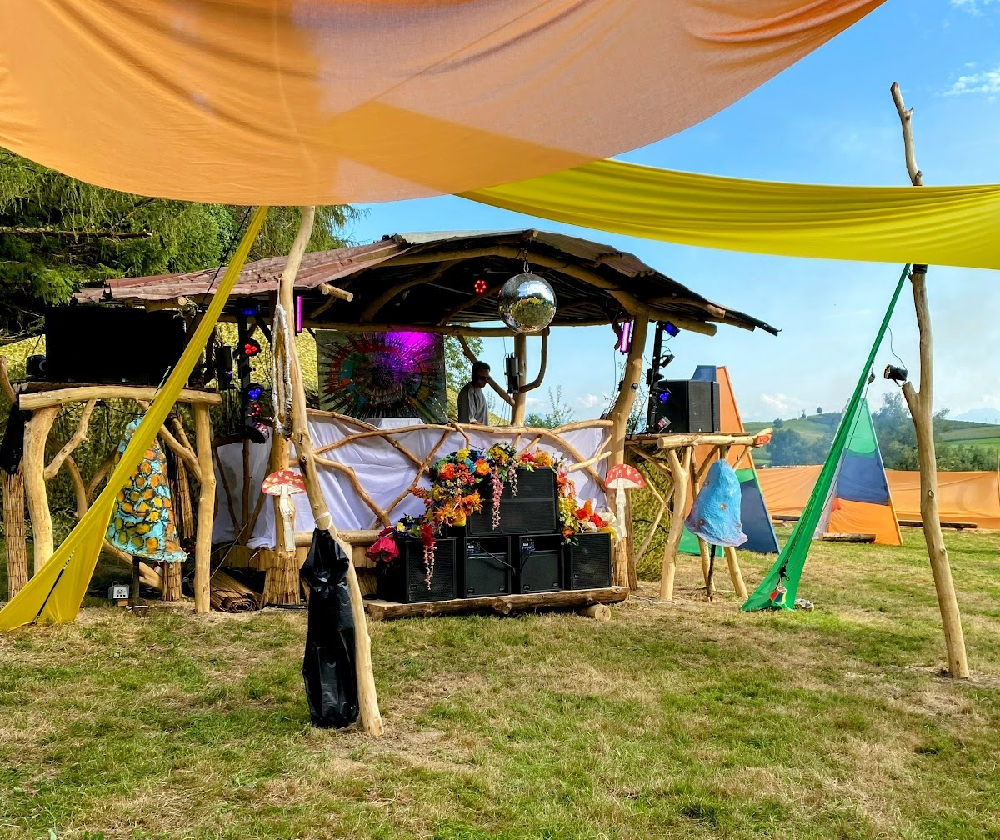
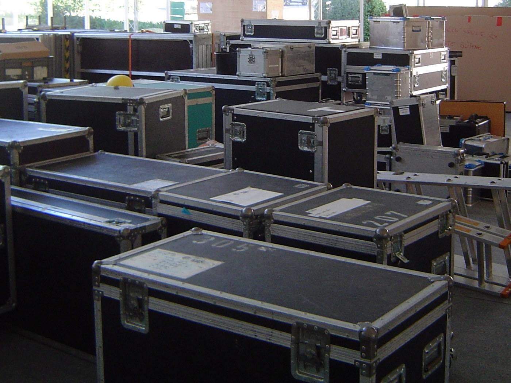
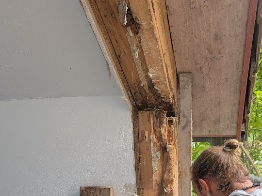
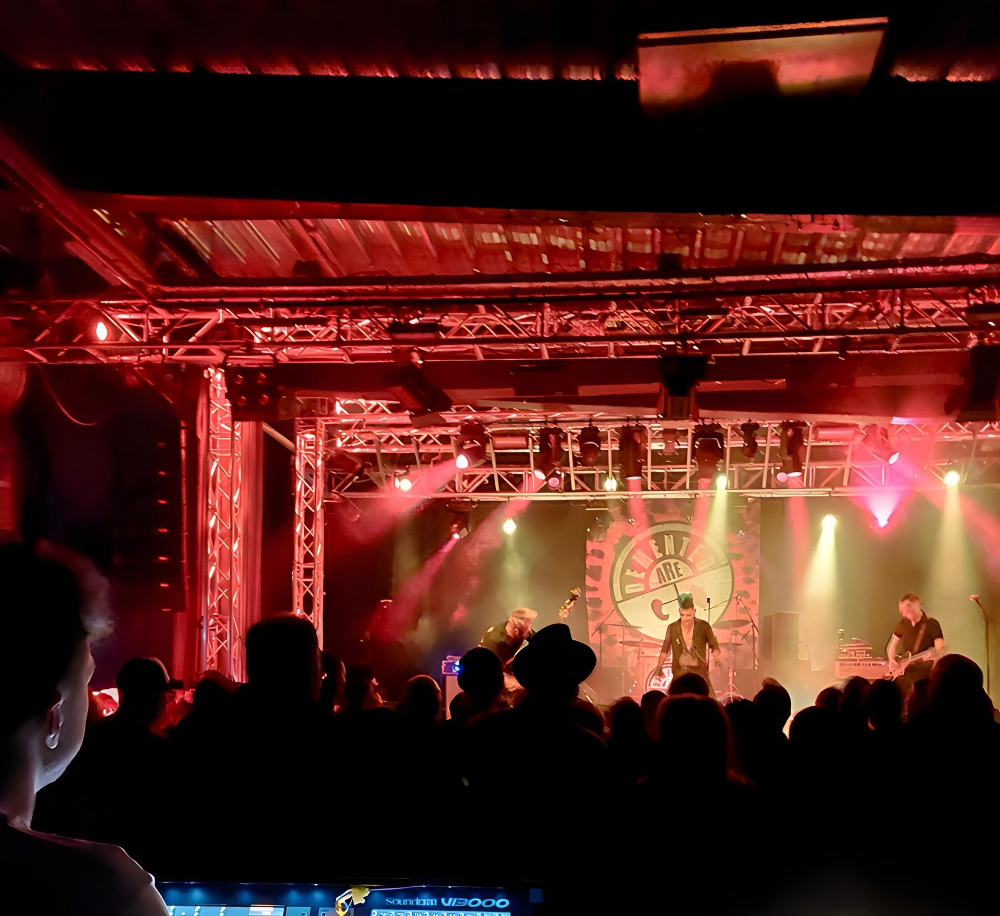

01 / TECHNIK
Ton, Licht & Stage
Veranstaltungstechnik, Lichtdesign, Tondesign, Stage Management, Event und Backline.
↗
Ton, Licht, Stage Management, Event & Backline. Dazu eigene Bühnenaufbauten, Holz- und Sonderbauten, wenn eine fertige Lösung nicht reicht.
Direkte Absprachen mit Wolf Prinz und Franz Bienert. Klar geplant, passend zum Ort und zum tatsächlichen Auftrag.

Wir starten bei Anlass, Ort und Ablauf. Daraus entsteht die technische Lösung – nicht umgekehrt.
Veranstaltungstechnik, Lichtdesign, Tondesign, Stage Management, Event und Backline.
Ausgewählte Geräte und Zusammenstellungen – passend geprüft, statt groß versprochen.
Eigene Aufbauten, Holz und praktische Sonderlösungen mit Franz, wenn Standardmaterial nicht die richtige Antwort ist.
Bühnen, Traversen und Sonderbauten entstehen dort, wo Material, Ort und Aufgabe zusammenkommen.


FraWo verbindet veranstaltungstechnische Praxis mit Holzbau und Sonderkonstruktion. Persönlich, regional und ohne anonyme Zwischenstufe.

Ton, Lichtdesign, Stage Management, Event und Backline – mit Blick auf den Ablauf, nicht nur auf die Einzelkomponente.

Holzbau und praktische Sonderlösungen – passend zum Einsatz und mit dem Anspruch, dass es am Ende wirklich funktioniert.
Datum, Ort und eine kurze Beschreibung reichen für den Anfang. Wenn der Bedarf noch nicht vollständig klar ist, sortieren wir ihn gemeinsam.